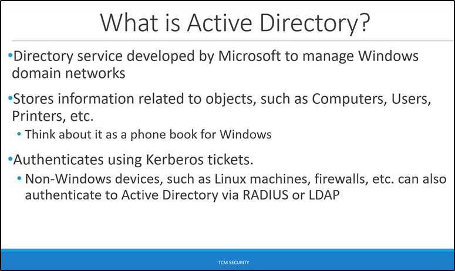

everything we're going to do in this section of the course is going to come up in an interview

think about logging into your computer with password and username.
But say maybe there's another computer either in a different building or just in a different location and you go to use that computer and you use the same username and password and then when you sign into your email use the same username and password. And it's because using something called Active Directory. So you can have just one username and password and you can authenticate around the network using these credentials. Now this authentication is going to be using something called Kerberos.We're going to talk about that later in the course But for now just know that
Authentication on Windows based devices using Active Directory uses something called Kerberos tickets.

TCM
"when we do internal assessments we do internal pen tests never i have ever had an environment that i pen tested again that was not active directory This is so important when it comes to interviewing, when it comes to real life experience this is the bread and butter.
So being able to exploit an environment from the inside is super super important. With Active Directory we can exploit it without ever being an exploit available to us. So there doesn't have to be a patchable exploit in the environment.
in external networks which is fortified you're not going to find your way in easily. So internal network being like the inside of a house you fortify the external environment of your house but you really don't think about the locks on the inside. And that's what happens a lot of times of Active Directory. It can get messy very fast.